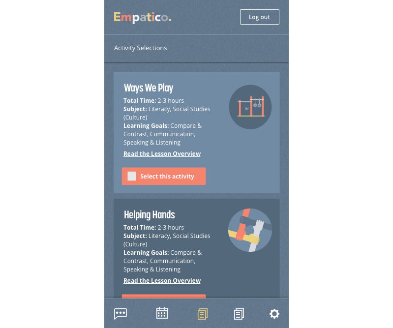

Empatico is a tool for school-aged children to connect with and learn about other children across the world in a classroom setting. Teachers sign up, enter criteria for their match, receive a partner classroom, and complete activities with that partner classroom. The activities are specifically designed to encourage curiosity and promote cross-cultural learning.
When I joined Empatico in 2017 as their first designer, the tool did not yet exist. At that point, the organization had completed some foundational research and had loosely determined product requirements. The goal was to create an MVP for a one-stop-shop type platform where teachers could browse activities, find another teacher based on criteria (times available, desired activity and student ages), and communicate with their partner teacher through chat and live video.
My first task was to design a desktop and mobile web MVP for the product. This included a teacher dashboard where teachers could see their partner teacher's availability, send invitations for live video lessons between their classrooms, chat, and browse activities and resources.
In addition to designing the product, I performed other light engineering tasks such as building out the product's landing page in React and coding/designing emails, and building components for the platform in React/Typescript.
The "matched dashboard" -- the dashboard that teachers see once they have been matched with a partner class. Here users can chat with their partners, see overlapping schedule times and send invitations for lessons.
The mobile version of the Empatico Dashboard. Teachers can chat, see overlapping schedule times, send invites for lessons and review lesson plans.
 Next ⇾